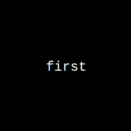
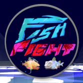
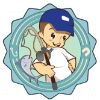
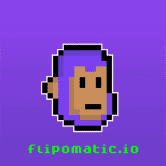

FireBusd 随着更多用户投资 BUSD，FireBusd 的价值将会上升。 将 BUSD 输入机器，每天获得 FireBusd 代币的质押奖励（每天 2%）。您可以随时领取您的 FireBusd 奖励。您不
 First First NFTs 第一个关于 NFT 的链上生成文本 NFT。 FIRST 是讽刺性生成文本的集合。它既嘲笑又深情地纪念了大约 2021 年 9 月 NFT 加密文化的许多方面。所有初级销售和二级销售的
 FishFight FishFight 是一款可收藏的 NFT 游戏，您可以在其中捕捉到外星世界的 FISH。 – 一旦你抓住了你的 $FISH，他们就只想做 $ONE 的事情：战斗！ 在那之后，他们会想要
 Fishing Lands Fishinglands 是由 Private Coding Company Limited 开发的 WAX 上的区块链游戏，以游戏赚钱的形式推出。首先，玩家需要拥有游戏中的工具，这些工具可以通过 AtomicHub 购买，与其他玩家交换，或从名为
FlameDeFi FlameDefi 是一个基于 Tezos 区块链的项目，它结合了： 经典 DEX 单产农业 游戏 FlameDeFi 支持 Tezos 区块链上的其他项目。 Tezos 上的任何项目都可以将他们的农场添加到我们的 SpaceFarm 中，从而显
FlashLiquidity FlashLiquidity 是运行在 Polygon 主网上的去中心化 AMM 交易所。 该协议的主要区别在于，流动性提供者可以获得交易量的 0.25% 的费用以及与保持流动性池平衡相关的套利利润。 在 FlashLiquidity 上
FLIBERO FINANCIAL Fantom Libero Financial Freedom 是一个变革性的 DeFi，具有双重奖励 159,058.06% 固定 APY 加上来自交易量的 226% BUSD APR 被动收入，每 10 分钟复合奖励，在一个简单的买入持有收益系统中，无需做
Flipbiner 扭曲的 Fomo 游戏。 10% 进 10% 出 dapp，旨在通过长期投资池帮助在持有的同时产生更多 MATIC,Flip PDF Plus Corporate 是一款功能强大、功能丰富的翻书制作工具，带有多媒体编辑器。
 Flipomatic.io Flipomatic.io 是一个智能合约，允许用户在 Polygon 网络上以 50/50 的保证赔率翻转硬币并加倍下注。 由chainLink担保所有赌注。 每次翻转都要缴纳 3.5% 的税，以奖励 Flipo NFT 持
Floki Elon Floki Elon 从他的模因父亲 Doge Coin 那里学到了一些技巧和教训。 由 Doge Coin 在线社区的粉丝和成员创造的新加密货币。 Floki Elon 试图通过展示他新的改进的交易速度和可爱来打动
Floki Pay Floki Pay Wallet 结合了 ERC-1363 EIP，允许客户在电子商务商店和当地咖啡馆或餐厅使用加密货币，所有这些都只需几美分的费用。 我们的目标是提供去中心化、私密且即时
Floki Shiba Floki Shiba 很可爱，但有很多 BITE！ $FSHIB 是一种通缩代币，旨在随着时间的推移变得更加稀缺。所有 Floki Shiba 的持有者将赚取更多的 Floki Shiba，只需将 Floki Shiba 硬币放入
Floki Solana Token 币安智能链上的 Floki Solana 是 solana 的 meme 版本，旨在使持有者实现持有的实际目的。它是一种超通缩、反鲸鱼和反地毯的代币，它使用公牛专用机制来确保每个持有者都能
FlokiSpace FLOKISPACE TOKEN 是一个新的革命性项目，它允许所有 SHIBA TOKEN ($SHIB) HODLERS 以 FLOKISPACE 和 $DOGEtokens 的形式产生无限的被动奖励！ 当您 HODL FLOKISPACE TOKEN 时，您会在每次推荐时自动获得 BNB 和 FLOKISPACE 奖励。所以尽可能多
Floorprice Prediction Game Floorprice Finance 是新的 NFT 衍生平台，将允许用户在无需购买基础 NFT 的情况下推测 NFT 的价格。 通过该平台，投资者可以利用他们的市场知识来预测特定 NFT 集合的底价在特定时
Flovatar Flovatar 是下一代 PFP 项目，建立在 Flow 之上，收藏家在其中发挥创意，塑造自己独特的角色。参与者将能够在超过 1000 亿种不同组合的七个主要类别中选择他们最喜欢的组
Flowerpatch Flowerpatch 是一款数字农业游戏，以收藏品和备受追捧的 ERC-721 FLOWER 为中心。我们已经消除了在现实世界中种植大麻的劳动密集型责任，并使您能够在舒适的家中或地球上的任
Flowns 飞龙在做什么？ https://www.onflow.org/post/flow-blockchain-flowns-domain-name-service-mynft Flowns 是一个社区驱动的项目，旨在为用户建立一个个性化的身份和资产开放协议。 Flowns团队创始人拥有丰富的互联网应用开发经验，深
Fluf World FLUF World 拥有 10,000 只独特的 3D 动画兔子，它们以 NFT 的形式生活在区块链上。 只有一件事 FLUF 比胡萝卜更喜欢，那就是兴奋剂节拍！因此，没有舞蹈和配乐，任何 FLUF 都不完
Fluffy Empires Fluffy Empires 是一款在 BSC（Binance）上进行的 3D 开放世界游戏。 Fluffies 是我们游戏以及相关生态系统中的主要参与者。每个 Fluffy 在外观和游戏统计数据方面都是完
Fluity Fluity Protocol 是币安智能链上 Liquity 协议的一个友好分支。 Fluity 致力于实现 Liquity 的愿景，即提供无息贷款、高资本效率和抗审查稳定币的去中心化借贷协议。 Fluity 具有与 Liquity 相同的功
Fly Frogs Fly Frogs 是 10,000 个随机生成的 NFT 的集合。没有两只青蛙是完全一样的。青蛙由 180 多种手绘资产组成，具有 6 个特征： 背景 (25) 皮肤 (23) 头 (52) 眼睛 (14) 嘴巴 (17) 服装 (56)
FMTLOL FMTLOL Dapp 用于创建用户活动以增加用户的知名度，通过添加社交帐户链接并允许用户在关注此帐户时获得 FM 令牌。 Follow Me 是基于 DeFi 的社交媒体奖励代币。该令牌允许用
Fnet Blockchain Explorer 鱼网| $FNet Fish Network 是一个集成的社区生态系统，可促进用户在一个生态系统中的使用： NFT P2E小游戏 薄荷应用 交换应用 区块链浏览器 P2E游戏 钱包应用 为什么选
Focused Sharpe Index 聚焦夏普指数 (FSI) 旨在保持稳定、持续的上升趋势，以努力永远超越 BTC 和 ETH。以 40% 到 60% 的百分比将 ETH 多头用于 BTC 将允许或持续 90 度上涨，风险最小。 $FSI 基金不
Foliowatch Foliowatch 是 Binance Smartchain 上第一个具有 LP 管理的智能 Defi Dashboard。 投资组合和流动资金池性能观察以及收益农业，完全去中心化。 LP 性能观察功能是 FolioWatch Dapp 的一种独特
Folks Finance 什么是大众金融？ Folks Finance 是服务于资本市场的领先协议，建立在 Algorand 区块链之上。该协议以去中心化和无需许可的方式提供借贷服务。通过借贷业务，Folks 用
Forgotten Runes Forgotten Runes Wizard’s Cult 是 10k Wizard NFT 的集合。每个向导都是独一无二的，并且有自己的名字。此外，所有巫师艺术都是在链上完全编码的。 随着我们的邪教为社交媒体和我们独一
Fortpolis Bank HTML 第 1 步 - 质押 BUSD 并获得 FORT 代币的每日质押奖励（每存入 100 BUSD 每天 2 个代币）。您可以随时领取您的 $FORT 奖励。您无法取消质押您质押的 BUSD。 第 2 步 - 您的